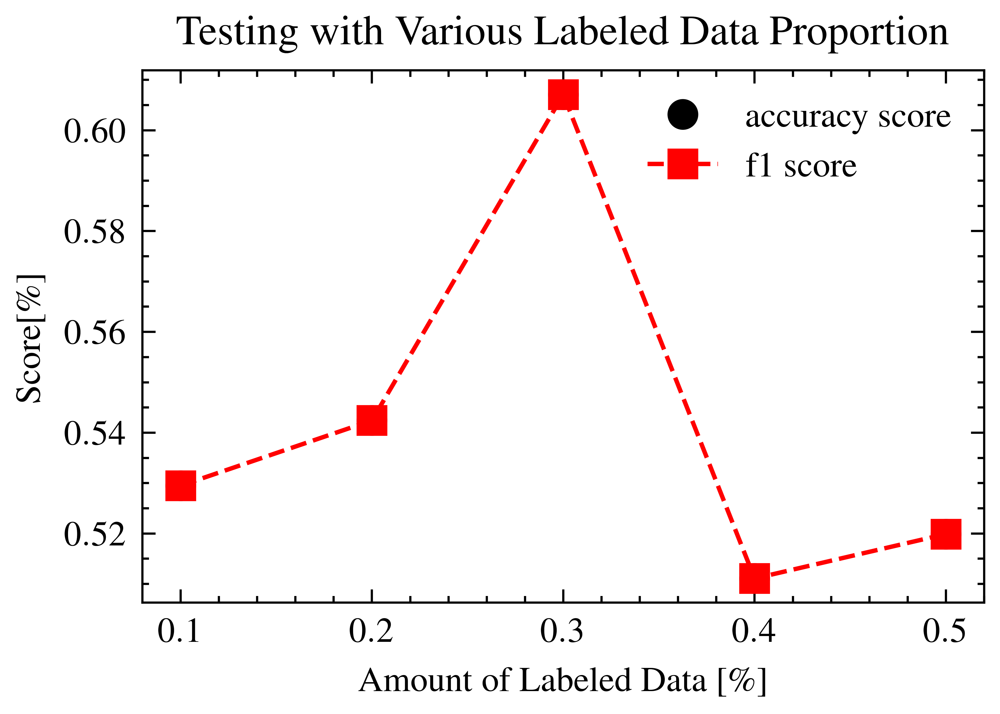

#(5)
#| echo: false
def counter2hms(c):
H = 60*60
M = 60
h, c = c//H, c%H
m, s = c//M, c%M
return int(h),int(m),int(s)2 実験1 : \(p_l = p_u = p\) に対する評価
実験1では，テストデータの区画数に対して \(p_l\%\) の区画数のラベル付きデータとそれと同数のラベルなしデータを用いた場合の性能を評価する．
ここで，ラベル付きデータは，無作為に選ばれたものではなく，ラベルごとに空間的に密集していることに注意されたい．これは土地被覆分類におけるアノテーションの実情を反映したものである．
#(6)
#| label: fig_test_with_various_labeled
#| fig-cap: "Testing with Various Labeled Data Proportion"
from qns3vm import QN_S3VM_OVR
from qns3vm.tools import classification_error
from sklearn.metrics import accuracy_score, f1_score, precision_score, recall_score
import random
from matplotlib import style
from matplotlib import pyplot as plt
style.use(['science','ieee'])
from time import sleep, perf_counter
from s3vm_pines.module import train_test_split3, labeled_unlabeled_sample, colored_map
from IndianPines import load, recategorize17to10_csv
pines = load(pca=20,recategorize_rule=recategorize17to10_csv)
train_test_status, train_test_status_name = train_test_split3()
rg = random.Random()
seed_l = None
seed_u = None
lam = 0.008765625
lamU = 1e-7 # 0に近いと完全教師
prop_train_l_list = [0.1, 0.2, 0.3, 0.4, 0.5]
acc = list()
err = list()
f1 = list()
fig2 = [0 for _ in prop_train_l_list]
ax2 = [0 for _ in prop_train_l_list] * 3
t_start = perf_counter()
t_old = t_start
for i, prop_train_l in enumerate(prop_train_l_list):
print('='*3 + f'{prop_train_l = }' + '='*3)
p_labeled = p_unlabeled = prop_train_l
l_u_t_conf = dict(
p_labeled = p_labeled,
p_unlabeled = p_unlabeled,
train_test_status = train_test_status,
seed_labeled = seed_l,
seed_unlabeled = seed_u
)
l_u_t_status, l_u_t_status_name = labeled_unlabeled_sample(**l_u_t_conf)
for j, s in enumerate(l_u_t_status_name):
n = l_u_t_status[l_u_t_status==j].shape[0]
print(f'{j}:{s}:{n}')
X_train_l = pines.features[l_u_t_status==3].tolist()
L_train_l = pines.target[l_u_t_status==3].tolist()
X_train_u = pines.features[l_u_t_status==4].tolist()
L_train_u = pines.target[l_u_t_status==4].tolist()
X_test = pines.features[l_u_t_status==1].tolist()
L_test = pines.target[l_u_t_status==1].tolist()
fig2[i] = plt.figure(figsize=(6.4*2,4.8*4), constrained_layout=True)
# labeled
ax2[3*i+0] = fig2[i].add_subplot(4,2,1)
colored_map(ax2[3*i+0], L_train_l, pines.coordinates[l_u_t_status==3])
ax2[3*i+0].set_title(f'labeled area {prop_train_l =}')
# unlabeled
ax2[3*i+1] = fig2[i].add_subplot(4,2,3)
colored_map(ax2[3*i+1], L_train_u, pines.coordinates[l_u_t_status==4])
ax2[3*i+1].set_title(f'unlabeled area {prop_train_l =}')
# lam : 0.008765625
# lamU : 0.8
clf = QN_S3VM_OVR(X_train_l, L_train_l, X_train_u, random_generator=rg, lam=lam, lamU=lamU)
clf.train()
preds = clf.predict(X_test)
err_ = classification_error(preds,L_test)
acc_ = accuracy_score(L_test, preds)
f1_ = f1_score(L_test, preds, average="micro")
ax2[3*i+2] = fig2[i].add_subplot(2,1,2)
colored_map(ax2[3*i+2], preds, pines.coordinates[l_u_t_status==1])
ax2[3*i+2].set_title(f'predicted label for tested area {prop_train_l =}, {acc_ = }, {f1_ = }')
fig2[i].tight_layout(rect=[0,0,1,0.96])
fig2name = f'kotaro_exp01_fig02_{i:0d}.png'
fig2[i].savefig(fig2name)
err.append(err_)
acc.append(acc_)
f1.append(f1_)
# counter
t_now = perf_counter()
t_lap = t_now-t_old
t_ave = (t_now-t_start)/(i+1)
t_rest = t_ave * (len(prop_train_l_list)-(i+1))
ho,mo,so = counter2hms(t_old)
hl,ml,sl = counter2hms(t_lap)
hr,mr,sr = counter2hms(t_rest)
print(f'lap {i+1} | {hl:2d}:{ml:2d}:{sl:2d} + {ho:2d}:{mo:2d}:{so:2d}, est {hr:2d}:{mr:2d}:{sr:2d}')
t_old = t_now
fig3 = plt.figure()
ax3 = fig3.add_subplot(1,1,1)
ax3.plot(prop_train_l_list, acc, 'o', label='accuracy score')
ax3.plot(prop_train_l_list, f1, 's--', label='f1 score')
ax3.legend()
ax3.set_xlabel(r'Amount of Labeled Data [$\%$]')
ax3.set_ylabel(r'Score[$\%$]')
ax3.set_title('Testing with Various Labeled Data Proportion')
fig3.tight_layout(rect=[0,0,1,0.96])
fig3.savefig("kotaro_exp01_fig03.png")Now clastering for each target category
1/10: Alfalfa n_clasters:1, maxsize=46, minsize=46
2/10: Corn n_clasters:11, maxsize=629, minsize=79
3/10: Grass n_clasters:7, maxsize=318, minsize=18
4/10: Hay-windrowed n_clasters:1, maxsize=478, minsize=478
5/10: Soybeans n_clasters:12, maxsize=1082, minsize=33
6/10: Wheat n_clasters:1, maxsize=205, minsize=205
7/10: Woods n_clasters:3, maxsize=904, minsize=120
8/10: Bldg-Grass-Tree-Drives n_clasters:2, maxsize=297, minsize=89
9/10: Stone-steel towers n_clasters:1, maxsize=93, minsize=93
===prop_train_l = 0.1===0:background:10824
1:test:5103
2:training_rest:4070
3:labeled:514
4:unlabeled:514Labels to predict = [1, 2, 3, 4, 5, 6, 7, 8, 9]
lam : 1 -> 0.008765625
lamU : 1 -> 1e-07
estimate_r: -0.9883268482490273
estimate_r: -0.5136186770428015
estimate_r: -0.7626459143968871
estimate_r: -0.9066147859922179
estimate_r: -0.2178988326848249
estimate_r: -0.9571984435797666
estimate_r: -0.7509727626459144
estimate_r: -0.9221789883268483
estimate_r: -0.9805447470817121lap 1 | 0:13:18 + 431: 9:53, est 0:53:15
===prop_train_l = 0.2===0:background:10824
1:test:5103
2:training_rest:3050
3:labeled:1024
4:unlabeled:1024Labels to predict = [1, 2, 3, 4, 5, 6, 7, 8, 9]
estimate_r: -0.990234375
estimate_r: -0.51171875
estimate_r: -0.76171875
estimate_r: -0.90625
estimate_r: -0.21484375
estimate_r: -0.958984375
estimate_r: -0.751953125
estimate_r: -0.923828125
estimate_r: -0.98046875lap 2 | 0:17:54 + 431:23:12, est 0:46:50
===prop_train_l = 0.3===0:background:10824
1:test:5103
2:training_rest:2034
3:labeled:1532
4:unlabeled:1532Labels to predict = [1, 2, 3, 4, 5, 6, 7, 8, 9]
estimate_r: -0.9908616187989556
estimate_r: -0.5104438642297651
estimate_r: -0.762402088772846
estimate_r: -0.9060052219321149
estimate_r: -0.21279373368146215
estimate_r: -0.9595300261096605
estimate_r: -0.7519582245430809
estimate_r: -0.9242819843342037
estimate_r: -0.9817232375979112lap 3 | 0:17:36 + 431:41: 7, est 0:32:33
===prop_train_l = 0.4===0:background:10824
1:test:5103
2:training_rest:1012
3:labeled:2043
4:unlabeled:2043Labels to predict = [1, 2, 3, 4, 5, 6, 7, 8, 9]
estimate_r: -0.9902104747919727
estimate_r: -0.5115026921194322
estimate_r: -0.762114537444934
estimate_r: -0.9060205580029369
estimate_r: -0.2129221732745962
estimate_r: -0.9598629466470877
estimate_r: -0.7523250122369066
estimate_r: -0.9236417033773863
estimate_r: -0.981399902104748lap 4 | 0:20: 8 + 431:58:43, est 0:17:14
===prop_train_l = 0.5===0:background:10824
1:test:5103
2:training_rest:0
3:labeled:2551
4:unlabeled:2547Labels to predict = [1, 2, 3, 4, 5, 6, 7, 8, 9]
estimate_r: -0.9905919247353979
estimate_r: -0.5107800862406899
estimate_r: -0.7624460995687965
estimate_r: -0.9059192473539789
estimate_r: -0.21207369658957273
estimate_r: -0.960015680125441
estimate_r: -0.7522540180321443
estimate_r: -0.9239513916111329
estimate_r: -0.981967855742846lap 5 | 0:20: 2 + 432:18:52, est 0: 0: 0


